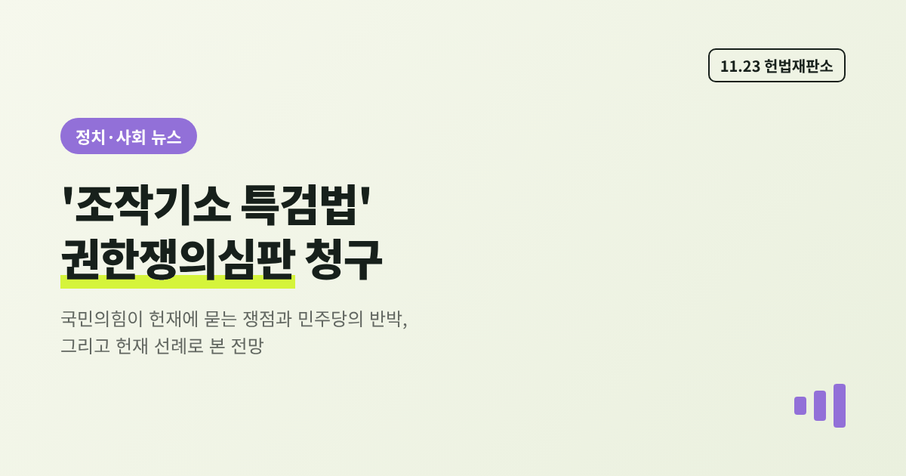
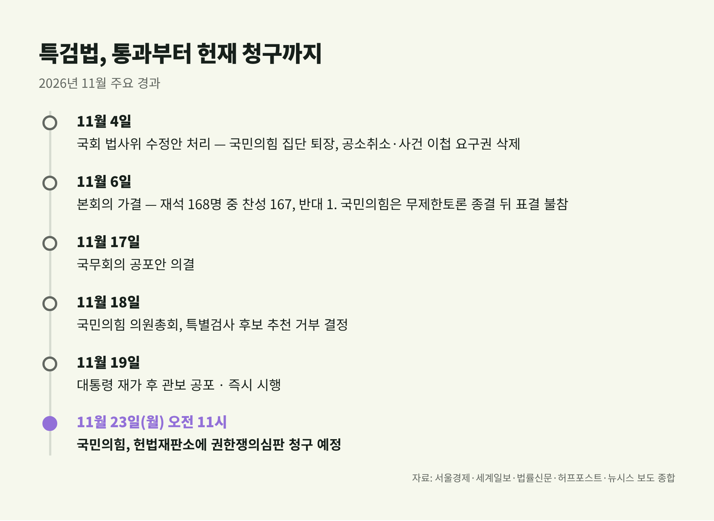
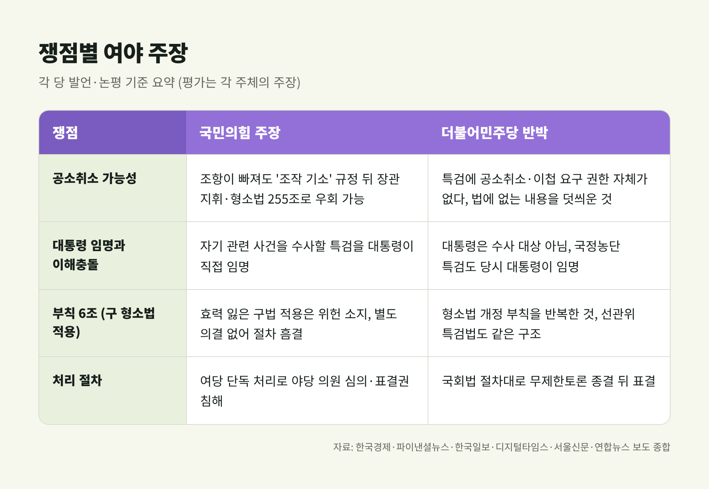
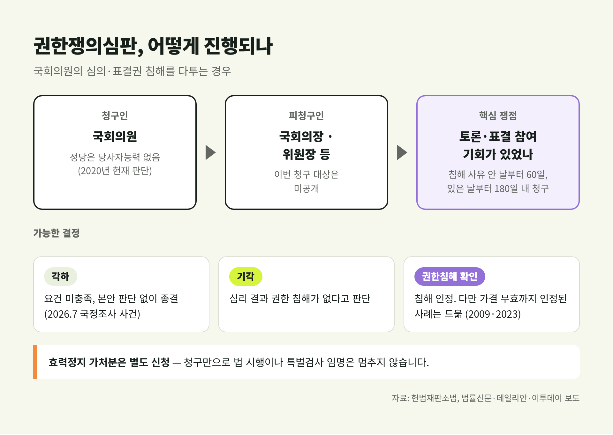
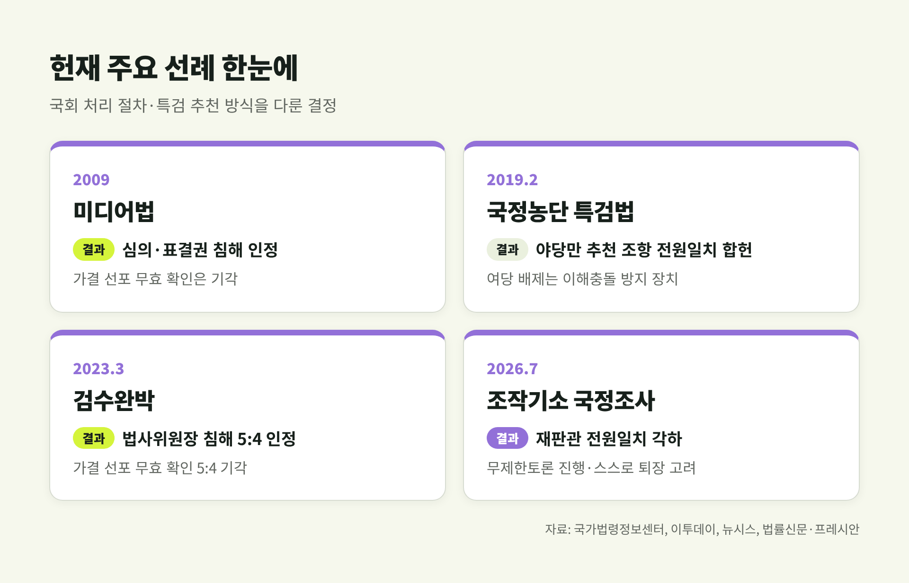
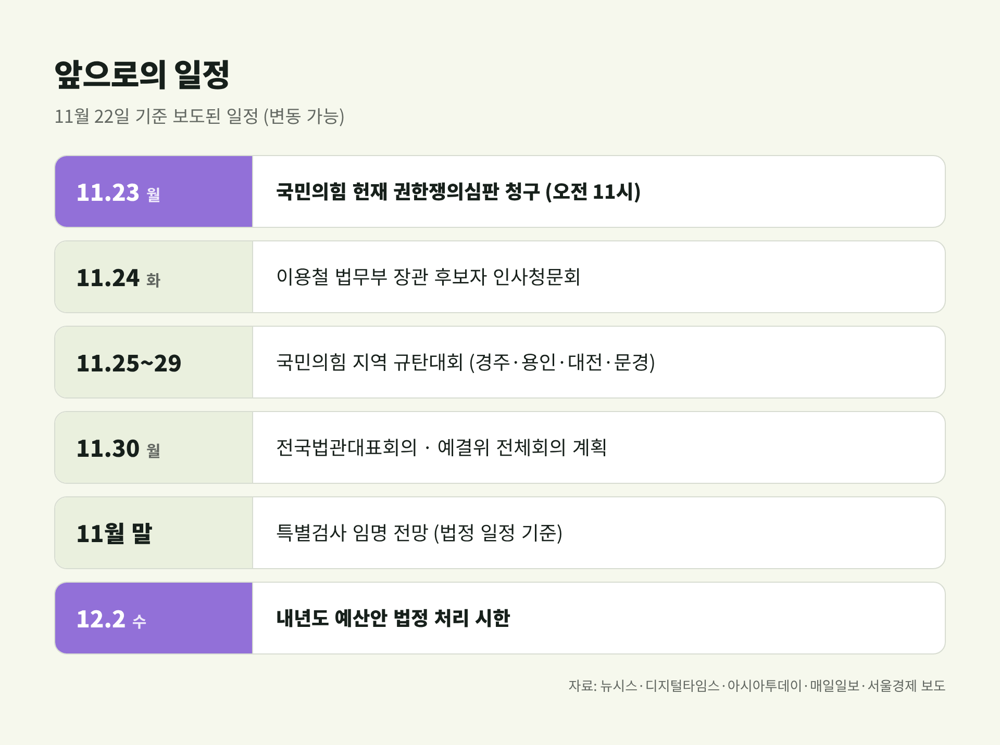

'조작기소 특검법' 권한쟁의심판, 국민의힘이 23일 헌재에 묻는 쟁점

국민의힘이 이른바 '조작기소 특검법'을 헌법재판소로 가져갑니다. 이번 글에서는 23일 청구되는 권한쟁의심판이 무엇을 다투는지, 여야가 각각 어떤 논리를 내세우는지, 헌재 앞에 놓인 선례는 무엇인지 차례로 정리해 보겠습니다.
세 줄 요약
- 국민의힘은 11월 23일(월) 오전 11시 김태규 법률자문위원장을 통해 헌재에 권한쟁의심판을 청구한다고 22일 밝혔습니다.
- 핵심 주장은 법안 처리 과정에서 야당 의원의 심의·표결권이 침해됐다는 것입니다. 민주당은 "법에 없는 내용을 덧씌운다"며 맞서고 있습니다.
- 지난 7월 비슷한 구조의 '조작기소 국정조사' 권한쟁의가 전원일치 각하된 전례가 있어, 이번 청구가 본안 판단까지 갈지가 첫 관문입니다.
■ 무슨 일이 있었나
최보윤 국민의힘 수석대변인은 22일 국회 기자간담회에서 청구 계획을 공개했습니다. 23일 오전 11시, 김태규 법률자문위원장이 심판청구서를 직접 헌재에 낸다는 내용입니다(뉴시스).
당은 처음부터 이 길을 택한 것은 아니었습니다. 11월 초에는 헌법소원과 위헌법률심판 제청을 검토했습니다. 그러다 헌법소원은 '당사자적격' 문제로 어렵다고 보고 권한쟁의심판으로 방향을 틀었다고 매일일보는 전했습니다.
보도된 청구 논거는 두 갈래입니다. 첫째, 여당 주도 처리 과정에서 야당 의원들의 심의·표결권이 침해됐다는 주장입니다. 둘째, 부칙 6조 문제입니다. 이 조항은 특별검사와 파견 검사의 수사권·지휘권에 '개정 전 형사소송법'을 적용하도록 합니다. 국민의힘은 이 부분에 대해 별도 국회 의결이 없었다며 입법 절차에 흠이 있다고 봅니다.
다만 청구서가 아직 공개되지 않았습니다. 청구인이 정당인지 개별 의원인지, 피청구인이 국회의장인지, 효력정지 가처분을 함께 내는지는 22일 저녁 기준으로 확인되지 않았습니다.
같은 날 장동혁 대표는 민주당의 조희대 대법원장 탄핵 추진까지 묶어 "위헌이고 위법이고 진짜 내란 행위"라고 비판했습니다(뉴시스). 정희용 사무총장은 대통령 재판 취소를 위한 위헌적 특검법이 속전속결로 처리됐다는 취지로 비판했습니다.
■ 법의 공식 이름과 '조작기소'라는 표현
먼저 이름부터 짚어야 합니다. 이 법의 정식 명칭은 「윤석열 정권 검찰청, 국가정보원, 감사원 등 국가기관의 조작수사·조작기소 등 의혹의 진상규명을 위한 특별검사 임명 등에 관한 법률」입니다(법률신문, 파이낸셜뉴스).
'조작기소 특검법'은 언론이 줄여 부르는 통칭입니다. 그런데 이 통칭에는 '조작이 있었다'는 전제가 담겨 있어 그 자체로 논쟁적입니다. 민주당은 검사의 증거 조작과 진술 회유 의혹을 밝히는 진상규명 특검이라고 설명합니다. 국민의힘은 같은 법을 '이재명 탈옥법', '대통령 재판 무력화법'이라고 부릅니다. 이 글에서는 독자 편의를 위해 보도상 통칭을 따옴표와 함께 쓰되, 어느 한쪽 규정에 동의한다는 뜻은 아님을 밝혀 둡니다.
법의 뼈대는 이렇습니다.
- 수사 대상은 12개 항목입니다. 이 가운데 6건이 대장동·위례·백현동 개발, 성남FC 후원금, 쌍방울 대북송금 등 이재명 대통령 관련 사건의 수사·기소 과정입니다. 문재인 정부 관련 사건(서해 공무원 피격, 문 전 대통령 사위 관련 의혹 등)도 법사위 수정 과정에서 추가됐습니다.
- 규모는 특검보 8명, 파견 검사 20명, 특별수사관 70명, 파견 공무원 210명으로 최대 309명입니다.
- 기간은 준비 20일에 기본 90일, 30일씩 세 차례 연장해 최장 200일입니다.
- 국회 예산정책처는 비용을 380억5,600만원으로 추계했습니다(뉴스토마토).
- 논란이 컸던 공소취소(공소유지 여부 결정) 권한과 사건 이첩 요구권은 국회 심사 중 삭제됐습니다.

진행 과정도 정리해 둡니다. 법사위는 11월 4일 국민의힘이 퇴장한 가운데 수정안을 처리했습니다. 본회의는 11월 6일 재석 168명 중 찬성 167명, 반대 1명(개혁신당 이주영 의원)으로 가결했습니다. 국민의힘은 무제한토론을 이어가다 종결 뒤 표결에 불참했습니다. 정부는 11월 17일 국무회의에서 공포안을 의결했고, 해외 순방 중인 이 대통령의 재가를 거쳐 11월 19일 관보에 공포했습니다. 공포와 동시에 시행됐습니다.
■ 왜 중요한가
이번 청구는 법 하나의 운명을 넘어 세 가지 질문을 함께 안고 있습니다.
첫째, 특검 출범 일정과 맞물려 있습니다. 법은 국회의장의 임명 요청부터 대통령의 최종 임명까지 단계마다 2~3일의 짧은 기한을 둡니다. 법정 일정대로라면 이달 말 특별검사가 임명될 전망입니다(서울경제, 디지털타임스). 청구만으로 이 절차가 멈추지는 않습니다. 멈추려면 별도의 효력정지 가처분이 받아들여져야 합니다.
둘째, 추천 구조에 대한 정치적 부담입니다. 법은 민주당·국민의힘·조국혁신당이 1명씩 추천하고 대통령이 그중 1명을 임명하도록 합니다. 국민의힘은 11월 18일 의원총회에서 추천을 거부했습니다. 기한 안에 추천하지 않으면 추천권을 포기한 것으로 봅니다. 결국 여권 성향 두 정당의 추천 후보 중에서 대통령이 고르는 구도가 됩니다. 이를 두고 국민의힘은 대통령이 자기 관련 사건을 들여다볼 수사팀 책임자를 직접 고른다고, 민주당은 "대통령은 수사 대상이 아니다"라고 각각 주장합니다.
셋째, 연말 국회 전체의 분위기입니다. 예산안 법정 시한(12월 2일), 법무부 장관 후보자 청문회, 대법원장 탄핵 논의가 한꺼번에 겹쳐 있습니다.
■ 쟁점 1: 국민의힘은 무엇을 위헌이라 보나
국민의힘의 주장을 발언 주체별로 모아 보면 이렇습니다.
정점식 원내대표는 11월 9일 이 법을 "100% 위헌"이라고 규정하며 네 가지를 들었습니다(한국경제). 평등원칙 위반, 진행 중인 재판에 미치는 영향, 대통령이 자기 관련 사건을 수사할 특검을 임명하는 문제, 그리고 검사에게 수사권을 주는 조항이 민주당 스스로 추진한 검찰개혁과 모순된다는 점입니다.
공소취소 조항이 빠진 뒤에도 '우회로'가 남아 있다는 주장이 이어졌습니다. 최은석 원내수석대변인은 특별검사가 어떤 사건을 '조작 기소'로 규정하면 법무부 장관 지휘를 거쳐 공소취소로 이어질 수 있다고 봤습니다(파이낸셜뉴스). 뉴스토마토에 따르면 최기도 법사위 전문위원도 이 법이 형사소송법상 검사 권한을 준용하는 만큼, 1심 선고 전까지 공소를 취소할 수 있다는 형사소송법 255조를 근거로 해석할 여지가 있다고 짚었습니다.
부칙 6조는 범여권 안에서도 문제 제기가 있었던 대목입니다. 10월 2일 시행된 개정 형사소송법은 검사의 직접수사권을 원칙적으로 없앴습니다. 조국 조국혁신당 혁신정책연구원장은 "이미 효력을 잃은 구법을 적용한다는 것은 위헌 위법 문제를 일으킨다"고 지적했습니다(서울신문). 민주당 곽상언 의원도 수사·기소 분리 원칙과 상충한다는 의견을 동료들에게 냈습니다(한국경제).
■ 쟁점 2: 민주당은 어떻게 반박하나
민주당의 반론도 같은 무게로 정리합니다.
공소취소 우려에 대해서는 "권한 자체가 없다"는 입장입니다. 한병도 원내대표는 특별검사에게 공소 취소, 사건 이첩 요구, 기존 재판 취소 권한이 없다고 강조했습니다(한국일보). 조계원 대변인은 국민의힘이 법에 없는 내용을 "덧씌우고" 있다고 반박했습니다(디지털타임스). 전은수 원내대변인은 이 대통령이 9월 기자회견에서 해당 조항 삭제를 직접 요청했고, 법무부 장관은 개별 사건 공소취소를 직접 지휘할 권한이 없다고 설명했습니다.
이해충돌 지적에는 전례로 답합니다. 서영교 법사위원장은 대통령은 수사 대상이 아니며, 대상은 윤석열 정부의 검찰·국정원·감사원이라고 말했습니다. 박근혜 정부 국정농단 특검도 박근혜 대통령이 임명했다는 점을 함께 들었습니다(연합뉴스).
부칙 6조에 대해서는 "새로 만든 규정이 아니다"라는 논리입니다. 김한규 원내정책수석부대표는 형사소송법 개정 당시 부칙에 특검·파견 검사의 수사권을 이미 규정했고, 이번 법은 그 규정을 "정확히 반복했을 뿐"이라고 했습니다. 여야 합의로 통과한 선관위 특검법도 같은 구조라는 점, 수사권 배분은 국회 입법재량이라는 헌재 판단도 근거로 제시했습니다(서울신문).
'채 해병 특검' 전례도 앞서 등장했습니다. 지난 5월 법사위에서 김동아 민주당 의원은 원안의 공소유지 권한에 공소취소가 포함되는 것은 맞다면서도, 해병대원 특검법에도 같은 조항이 있었다며 그것이 위헌이었냐고 되물었습니다(한국경제). 다만 이는 공소취소 조항이 삭제되기 전 원안 단계의 공방이라는 점을 함께 적어 둡니다.

■ 권한쟁의심판이란 무엇인가
권한쟁의심판은 국가기관끼리 권한의 범위를 두고 다툴 때 헌재가 가려 주는 절차입니다. 국회의원이 국회의장이나 상임위원장을 상대로 "내 심의·표결권이 침해됐다"며 내는 경우가 대표적입니다.
몇 가지 요건이 있습니다.
- 청구 기간: 헌법재판소법 63조에 따라 침해 사유를 안 날부터 60일, 있은 날부터 180일 안에 내야 합니다. 11월 6일 가결을 기준으로 해도 기간 안입니다.
- 당사자: 헌재는 정당은 국가기관이 아니어서 권한쟁의의 당사자가 될 수 없다고 판단한 바 있습니다(2020년 공직선거법 패스트트랙 사건). 이 때문에 실제 청구인이 '국민의힘'이라는 당 명의인지, 소속 의원 개인인지가 첫 확인 사항입니다.
- 침해 가능성: 의원에게 토론과 표결에 참여할 기회가 실질적으로 주어졌는지가 핵심 판단 기준입니다.
- 가처분: 청구만으로 법 시행이나 특검 임명은 멈추지 않습니다. 별도 효력정지 가처분이 필요하고, 헌재는 진행했을 때의 손해와 멈췄을 때의 공익 손실을 비교해 판단합니다(데일리안).

■ 헌재 앞에 놓인 선례들
비슷한 다툼에서 헌재가 내린 결정은 이번 사건을 가늠하는 참고점입니다.
가장 가까운 것은 지난 7월 23일 결정입니다. 국민의힘 의원 7명이 '조작기소 국정조사' 계획서 가결을 문제 삼아 낸 권한쟁의를 헌재는 재판관 전원일치로 각하했습니다(법률신문, 프레시안). 헌재는 무제한토론이 정상적으로 진행됐고 청구인들이 스스로 퇴장해 표결에 참여하지 않았다는 점을 들었습니다. 심의·표결권은 "참여 기회"를 보장하는 권한이지 특정 방향의 의결을 보장하는 권한이 아니라는 취지입니다. 디지털타임스는 이번 특검법 처리도 무제한토론 뒤 국민의힘이 표결에 불참한 구조라 이 결정이 변수가 될 수 있다고 짚었습니다.
반대로 침해가 인정된 사례도 있습니다. 2023년 3월 이른바 검수완박 사건에서 헌재는 법사위원장이 국민의힘 의원의 심의·표결권을 침해했다고 5대 4로 인정했습니다. 그러나 가결 선포를 무효로 해 달라는 청구는 5대 4로 기각했습니다(이투데이). 2009년 미디어법 사건도 침해는 인정하되 무효 확인은 받아들이지 않았습니다.
정리하면, 절차상 흠이 인정되더라도 법의 효력까지 잃는 경우는 드물었습니다. 예전 사건들에서는 '침해 인정, 효력 유지'가 하나의 패턴이었고, 최근 국정조사 사건에서는 그 이전 단계인 각하로 끝났습니다.
추천 방식 자체에 대한 선례도 있습니다. 헌재는 2019년 2월 국정농단 특검법에서 야당만 추천하도록 한 조항을 전원일치 합헌으로 봤습니다. 여당을 뺀 것을 이해충돌을 막는 합리적 장치로 평가했습니다(뉴시스). 이번 법은 여당도 추천권을 갖는다는 점에서 구조가 다릅니다(뉴스토마토). 아울러 순직해병 특검법의 임명·공소 관련 조항에 대한 헌법소원도 지난 6월 전원재판부에 회부돼 심리 중입니다.

■ 법조계는 어떻게 보나
실명으로 나온 전망은 주로 헌법소원 단계에 대한 것입니다.
데일리안이 인터뷰한 김소정 변호사는 특검 추천권이 "헌법이 직접 보장하는 기본권이라기보다 법률이 부여한 권능"이라며, 헌법소원은 자기관련성이나 직접성 부족으로 각하될 가능성이 있다고 봤습니다. 최건 변호사는 "국민의힘이 직접 사법구제를 하는 것은 쉽지 않아 보인다"고 했습니다. 두 변호사 모두 의원의 심의·표결권 문제는 권한쟁의로 다툴 수 있고, 헌재가 국회법 절차 준수 여부를 들여다볼 수 있다는 점은 인정했습니다.
국민의힘 내부에서도 신중론이 나옵니다. 데일리안에 따르면 당 출신 한 변호사는 각하나 기각 가능성을 언급했습니다. 그럼에도 당은 이번 청구에 이어 위헌법률심판 제청과 헌법소원도 이어 갈 것으로 전해졌습니다. 결과와 별개로 법적 쟁점을 공식 기록으로 남기겠다는 의미도 있어 보입니다.
■ 연말 정국과 맞물린 대치
권한쟁의는 연말 국회의 여러 전선 가운데 하나입니다.
예산안 법정 처리 시한은 12월 2일입니다. 아시아투데이에 따르면 예결위는 27일까지 조정소위를 열고 30일 전체회의를 열 계획입니다. 국민의힘은 162조3,000억원 규모 미래대응기금 전액 삭감을 요구하며 "쌈짓돈"이 될 수 있다고 주장합니다. 민주당은 정부 핵심 사업이라 받아들일 수 없다는 입장입니다.
11월 24일에는 이용철 법무부 장관 후보자 인사청문회가 열립니다. 국민의힘은 후보자를 "이 대통령 탈옥 맞춤형 장관"이라 부르며 공소취소 관여 가능성을 집중 추궁할 방침입니다. 민주당은 개편된 형사사법 체계를 안착시킬 적임자라며 엄호할 예정입니다.
장외에서는 국민의힘이 25일 경주, 26일 용인, 28일 대전, 29일 문경에서 규탄대회를 이어 갑니다. 민주당은 "장외 대신 예산 심사에 집중하라"며 '민생 배임'이라는 표현까지 쓰고 있습니다. 11월 30일에는 전국법관대표회의가 예정돼 있고, 국민의힘은 그 결론을 이 대통령 재판 재개 문제와 연결 짓고 있습니다(매일일보).
■ 앞으로의 일정과 관전 포인트

당장 확인할 것은 세 가지입니다.
- 청구서의 구체적 내용: 청구인 구성, 피청구인, 무효 확인까지 구하는지, 가처분을 함께 냈는지에 따라 사건의 성격이 달라집니다.
- 특별검사 임명 시점: 법정 일정대로라면 이달 말입니다. 가처분이 없거나 받아들여지지 않으면 수사팀은 예정대로 출범합니다.
- 헌재의 첫 판단: 본안 심리로 넘어가는지, 7월처럼 요건 단계에서 정리되는지가 관건입니다. 권한쟁의는 구두변론을 거쳐야 해 결론까지는 시간이 걸릴 수 있습니다.
국민의힘이 문제 삼은 내용 중 일부는 다른 경로로도 헌재에 갈 수 있습니다. 특별검사가 실제 수사를 시작하면 피의자가 된 개인이 헌법소원을 내거나, 재판부가 위헌법률심판을 제청할 가능성도 거론됩니다(뉴스토마토, 서울신문).
정리하면 이렇습니다. 국민의힘은 절차와 구조의 위헌성을, 민주당은 검찰권 남용의 진상규명 필요성을 각각 앞세우고 있습니다. 어느 쪽 주장이 옳은지는 이제 정치가 아니라 헌재의 언어로 다시 다뤄지게 됐습니다.
절차를 다투는 소송은 결론만큼이나 그 과정에서 드러나는 기준이 중요합니다 — 이번 청구가 지켜볼 만한 이유입니다.
헌재가 어떤 결론을 내놓을지 지금 단정할 수는 없습니다. 다만 그 판단이 앞으로 특별검사 입법의 방식에 하나의 기준을 남기리라는 점은 분명해 보입니다.
참고자료
- 뉴시스, 「국힘, 내일 헌재에 '조작기소 특검법' 권한쟁의심판 청구」(2026-11-22) https://www.newsis.com/view/NISX20261122_0003878248
- 디지털타임스, 「대구서 특검 폐지 외친 국힘, 내일 헌재로…이용철 청문회선 공소취소 쟁점」(2026-11-22) https://www.dt.co.kr/article/12096438
- 매일일보, 「조작기소 특검에 장외·헌재 맞불…野 총력전」(2026-11-22) https://www.m-i.kr/news/articleView.html?idxno=2021689
- 아시아투데이, 연말 정국 예산안·청문회 기사(2026-11-22) https://www.asiatoday.co.kr/kn/view.php?key=20261123010008491
- 데일리안, 「[단독] 국민의힘, '조작기소 특검법' 헌재에 권한쟁의심판 청구한다」(2026-11-19) https://www.dailian.co.kr/news/view/1717465
- 데일리안, 「국민의힘, 조작기소 특검법 헌법소원 검토…헌재 문턱 넘을까」(2026-11-10) https://www.dailian.co.kr/news/view/1712968
- 데일리안, 「민주·국힘·혁신당 1명씩 추천…조작기소 특검, 최종 선택은 대통령」(2026-11-17) https://www.dailian.co.kr/news/view/1716074
- 한국경제, 「"100% 위헌" 국힘 헌법소원 검토…여권도 "수사·기소 분리와 상충"」(2026-11-09) https://www.hankyung.com/article/202611094465H
- 한국경제, 「국힘 "특검법 공소유지권 위헌"…민주 "채 해병 특검 때도 포함"」(2026-05-06) https://www.hankyung.com/article/2026050696981
- 법률신문, 「헌재, 국힘 '조작기소 국정조사' 권한쟁의심판 청구 각하」(2026-07-23) https://www.lawtimes.co.kr/news/articleViewAmp.html?idxno=223909
- 프레시안, 「국민의힘 '조작기소 국정조사' 권한쟁의 냈지만…헌재, 만장일치 각하」(2026-07-23) https://www.pressian.com/pages/articles/2026072315541126104
- 법률신문, 「이 대통령 '조작기소 특검법' 재가…」(2026-11-19) https://www.lawtimes.co.kr/news/articleView.html?idxno=229669
- 파이낸셜뉴스, 「'조작기소 특검법' 국무회의 의결…12개 항목 최장 200일 수사」(2026-11-17) https://www.fnnews.com/news/202611171149402038
- 파이낸셜뉴스, 「'조작기소특검' 국무회의 앞두고…野 "李 죄지우기" 與 "檢 조작범죄 확인"」(2026-11-15) https://www.fnnews.com/news/202611151354018977
- 서울신문, 「조작기소 특검법 시행… 민주·혁신, 후보 추천 실무 돌입」(2026-11-20) https://seoul.co.kr/news/politics/2026/11/20/20261120008004
- 서울신문, 「조국 "조작기소 특검법, 위헌 소지"…민주당 "문제 없다"」(2026-11-06) https://www.seoul.co.kr/news/newsView.php?id=20261106500287
- 허프포스트코리아, 「국힘 '조작기소 특검' 추천 거부하고 장외투쟁에 무게」(2026-11-18) https://www.huffingtonpost.kr/article/262198
- 서울경제, 「조작기소 특검 인선 난항 전망…」(2026-11-21) https://m.sedaily.com/article/20117091
- 세계일보, 「與, '조작기소 특검법' 강행처리… 野 집단 퇴장」(2026-11-06) https://www.segye.com/newsView/20261106514918
- 한국일보, 「"계엄 옹호하던 자들이 대통령 탄핵 입에 올려"…」(2026-11-09) https://www.hankookilbo.com/news/article/A2026110915540000315
- 뉴스토마토, 「'수사권' 부활한 조작기소 특검…쟁점 '셋'」(2026-11-09) https://newstomato.com/ReadNews.aspx?no=1319730
- 연합뉴스(한민족센터 게재), 서영교 법사위원장 반박(2026-11-08) https://www.koreancenter.or.kr/news/articleView.html?idxno=1436406
- 이투데이, 「[종합] 헌재 "검수완박, 심의‧표결권 침해했지만…법은 유효"」(2023-03-23) https://www.etoday.co.kr/news/view/2233663
- 뉴시스, 「헌재, 최순실 특검법 합헌」(2019-02-28) https://www.newsis.com/view/NISX20190228_0000573324
- 법률신문, 정당의 권한쟁의 당사자능력 판시(2020) https://www.lawtimes.co.kr/news/articleView.html?idxno=161897